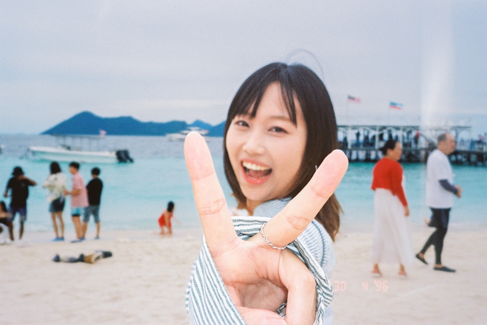
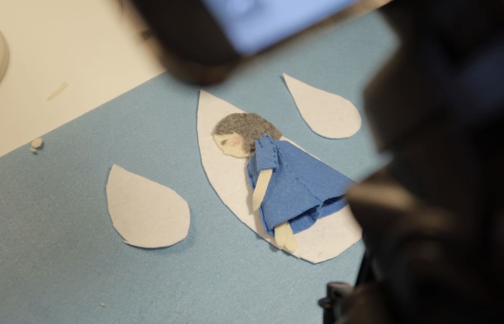
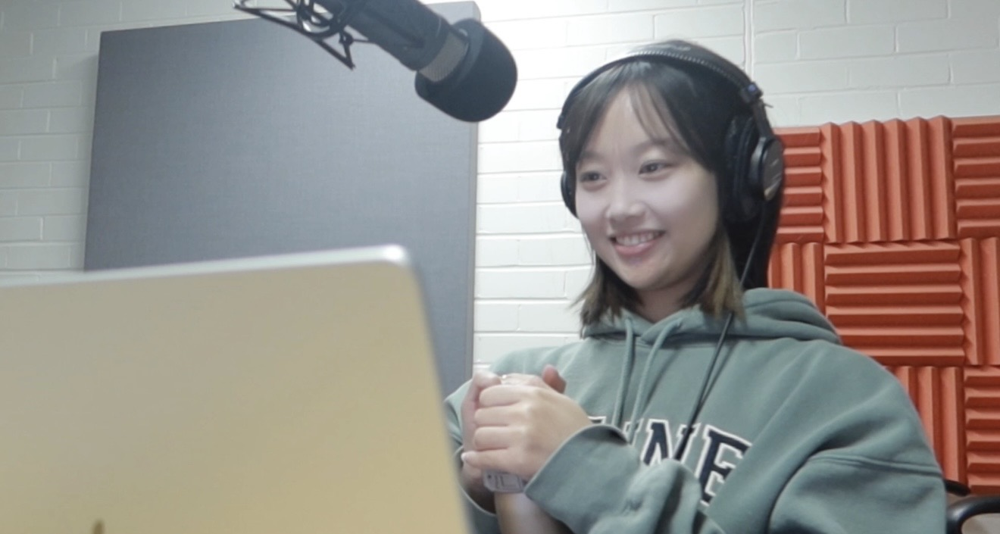
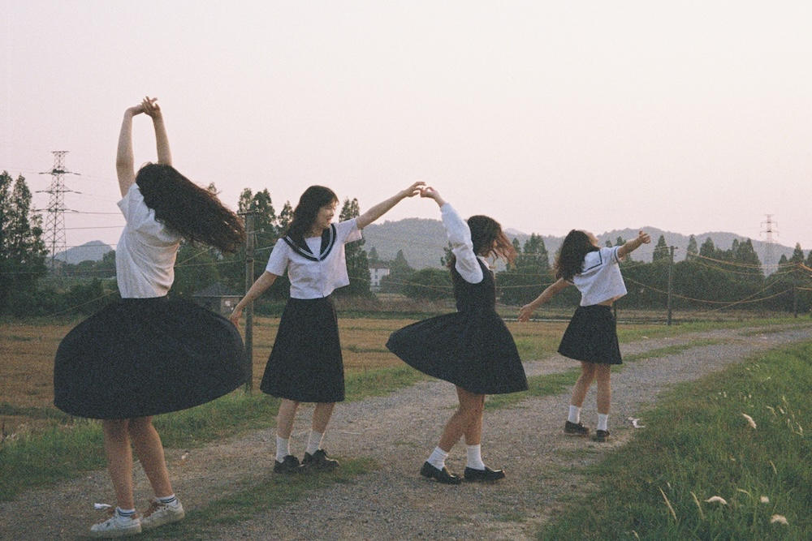
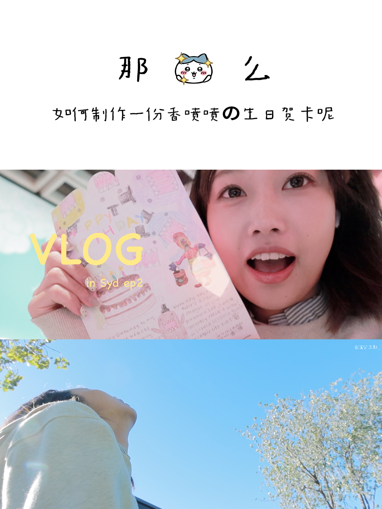
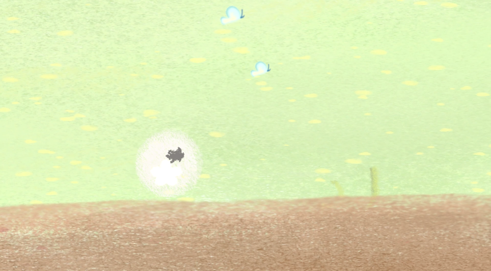

Portfolio · 2021–2026.03
Stay curious. To be the director of my own life.
About Me · 关于我
Brand Strategy · Growth Marketing · Content & Visual Storytelling
UNSW Media (Screen Production). Co-founded an AI startup and led brand strategy and user growth. Experienced in influencer marketing, content strategy, and visual storytelling — working across both Chinese and Australian markets.
At its core, great marketing is great storytelling.
Selected Achievements

Selected Work
ConnectOnion · 联合创始人
Developers don't respond to hype — they respond to clarity and community. So I led with education, not promotion.
青木数字科技 · KOL 运营实习
Good KOL work isn't about follower count — it's about fit. I built selection criteria around audience overlap, not vanity metrics.
UNSW 校园兼职平台 · Head of Marketing
Most teams skip the listening. I ran 200+ student interviews before touching Figma — because the right wireframe starts with the right question.
独立纪录片 · 公益影像
A documentary on loneliness. A short film for a community of performers with disabilities. Before I learned to market stories, I learned to tell them.
Beyond Work

用定格动画让雨有了语言。

聊感情、聊关系，也聊自己。

用胶片感记录日常里的微小温柔。

把镜头对准生活。

从零学 Unity，把脑子里的世界做出来。
Experience · 经历
Open to brand marketing, content strategy & creative collaboration.